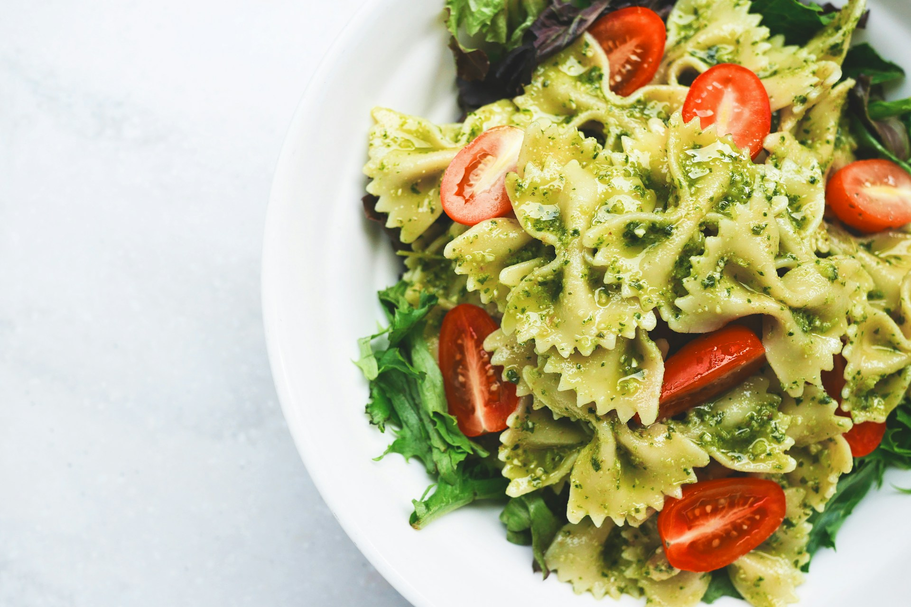

Pasta with Pesto Genovese

Image by Eaters Collective on Unsplash
This recipe is perfect for those looking to cook something easy, breazy, and delicious. Pesto Pasta never bothered anyone.
Ingredients
- Fresh Basil
- Lemon
- Garlic
- Pine nuts
- Olive Oil
- Salt & Pepper
- Your Choice of pasta (I recommend Bucatini)
Step by step
- Roast a handful of pine nuts on a pan until golden brown and throw it into a food processer.
- Squeeze half a lemon and add it to the food processer.
- Add a dash of salt and pepper.
- Throw in a small garlic clove and mix it all together in the food processer.
- Once mixed together, add a lot of fresh basil (don't forget to wash it first). Mix together again.
- Then add a good amount of olive oil and mix.
- Taste the pesto and add more of the ingredients to your taste.
- Set pesto aside and cook your pasta until al dente.
- Once the pasta is done, remove the water and throw in the pesto.
- Enjoy!
Home